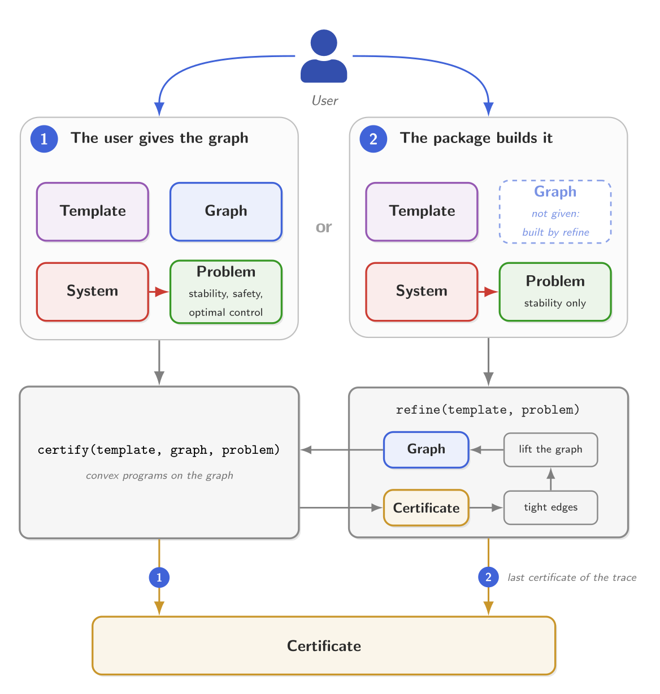

PathCompleteCertificates.jl
PathCompleteCertificates.jl is a Julia package that computes certificates for discrete-time switched linear systems under arbitrary switching: proofs that the system is stable, that it stays safe, or that a feedback policy keeps its cost bounded. Each certificate is built on a path-complete graph, a graph whose paths read every sequence of modes. You choose the graph, or let the package build it.
What it certifies
- Stability. An upper bound on the joint spectral radius, the worst asymptotic growth rate of the trajectories. A bound below one proves the system stable.
- Safety. That no trajectory starting in an initial set reaches an unsafe set.
- Optimal control. A state-feedback policy, and an upper bound on its cost for every switching sequence.
Two ways to use it
You give the graph, and certify computes a certificate on it, for any of the three problems. Or, for stability, you leave the graph out, and refine builds one: it solves, reads where the certificate is tight, lifts the graph there, and solves again.

An example
The simplest case of the first way: a planar switched linear system with two modes, $x_{k+1} = A_{\sigma(k)} x_k$; the quadratic template, $V(x) = x^\top P x$; and a graph with one node. Together they give a stability certificate, a common quadratic Lyapunov function, whose rate $\gamma$ is an upper bound on the joint spectral radius of the system:
import PathCompleteCertificates as PCC
import Clarabel
A1 = [0.1552 0.0447; 0.7641 0.7472] # mode 1
A2 = [0.0475 0.9176; 0.1896 0.0185] # mode 2
system = PCC.switched_system([A1, A2]) # planar switched linear system, two modes
certificate = PCC.certify(
PCC.QuadraticTemplate(), # V(x) = xᵀPx at each node
PCC.common_graph(system), # one node, one loop per mode
PCC.StabilityProblem(system); # V(Aᵢx) ≤ γ² V(x) along each edge
optimizer = Clarabel.Optimizer, # the solver of the semidefinite program
)
certificate.rate0.9586944580078125The bound is below one, so the system is stable under arbitrary switching.
How a certificate works explains the optimization problem that the template, the graph and the problem build, and why its solution proves stability, safety or a bound on the cost, for every switching sequence.
How the documentation is structured
New to the package? Read Should you use PathCompleteCertificates.jl? and Installation, then Part I of the manual.
Manual. How to solve your problem with the package, in three parts, the first two following the two ways above:
- I. Certify your system with a graph you choose. Define the system and the problem, choose a template and a graph, call
certify, and read the certificate. Start at Systems and problems. - II. Let the package improve the graph. When you do not know which graph to choose, or want a better certificate, Refining the graph improves it step by step, applying Lifts where the certificate is tight; each lift gives a certificate at least as good.
- III. Going further. Tools on the framework itself, beyond one system: Comparing graphs, to prove when possible that a graph gives a certificate at least as good as another for every system, and Duality, which reverses the graph, transposes the system, and turns a certificate into another just as good.
What works with what says which templates each problem accepts, which lifts are valid for each template, where refinement and comparison apply, and which gaps remain.
- I. Certify your system with a graph you choose. Define the system and the problem, choose a template and a graph, call
Tutorials. One problem solved from start to end per page.
Bibliography. The papers the package implements, and what it takes from each.
API Reference. Every function, from its docstring.
Developers. How to set up, test and extend the package.
For researchers
The package aims to implement the state of the art on path-complete certificates, and its documentation to survey the literature behind it: results spread across many papers, brought together in one implementation and one notation. The manual cites, where each result is used, the paper and the theorem it comes from, and the Bibliography says which paper each part of the package comes from.
Since every template, graph and problem shares one interface, methods from different papers run on the same system with the same solver, and their conservativeness and solve time can be benchmarked side by side.
To keep the implementation and the survey current, the package is built to receive new methods: What works with what shows the combinations not yet covered, and Extending the package how to add a template, a problem, a lift or a refinement algorithm.
Getting help
For questions, bug reports and suggestions, open an issue on GitHub.
Citing
The package and the methods it implements are cited separately:
- The package. If you use PathCompleteCertificates.jl in your work, please cite it. A paper describing the package is in preparation; until it is published, cite the GitHub repository.
- The methods. For the algorithms and theoretical results the package implements, please cite the papers they come from, listed in the Bibliography.
License
PathCompleteCertificates.jl is licensed under the MIT license. It is used with solvers and other packages that have their own licenses; consult their repositories for the licenses that apply.